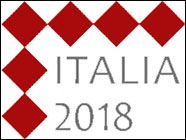
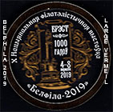
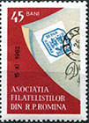

|
Over Twenty Years on the Web |

 |
Discover this non-commercial site, dedicated to Romania as seen through its stamps. The site not only shows nice Romanian stamps, but tries to introduce you to this country, to its original culture, its wonderful landscapes and its friendly people. You can find here pages dedicated to Romanian history, thematic collection, postal history and to many other subjects. The site was initially thought for the beginner collectors, being enriched in time with higher-level pages describing the propaganda and commercial manipulations due to a totalitarian regime that reigned for 45 years in Romania. The site is partially bilingual English - Romanian. |
 |
This site is intended for you, a person who wishes to know more about Romania. It was created and is permanently updated by Victor Manta, a Swiss stamp collector. You can benefit from his experience, because he lived many years in Romania and has a large knowledge of country's culture, language, history, literature, and also of its stamps, which he collects since childhood. A long years fan of Romanian topical stamps, he is especially interested in the relationship between the images on Romanian stamps, the tormented history of Romanian people and by the art and culture in Romania.
The present site was started in 2001, when Romanian philately was virtually not present on the web. The first objective of the author was to present a large sample of Romanian postage stamps to attract as many readers as possible to their collection and presentation. This objective was largely achieved, especially after the EFIRO 2008 World Exposition, where the author presented in an exhibit all the world sites dedicated to Romanian postage stamps. Afterwards, he focused on the coverage of some special areas, sometimes very technical (like Brussels overprints), or others little covered by the philatelic press (the imperforate sheets, the Odessa massacre, cheats, forgotten champions, etc.). Many of the newer articles have been published by the author in the Romanian and international printed press.
Victor Manta, a pioneer of the philatelic web, is a former member of the Association of
Romanian Philatelists, of the Union of Swiss Philatelic Associations and of AIJP.
In 1997 the author founded
PASIC (Paintings and Arts on Stamps Internet Club), counting at time over
700 members from
70 countries, and affiliated
since 1999 with the American Topical Association.This club is quite popular
worldwide, and especially in Romanian philatelic circles, which
is reflected by the fact that the second largest participation in
PASIC comes from Romania. |


 |
 |
 |
 |
 |
Mr. Victor Manta is also the founder of the Philatelic Webmasters Organization (PWO) that counts over 350 members. This organization actively fights against the proliferation of illegal and excessive stamp issues. His Arts on Stamps site, that includes a large chapter on Romanian art, partially included in this site, was internationally awarded in the year 2000. In the year 2002 at the PhilaKorea Philatelic Exhibition in Seoul this site was awarded "Three Stars" by the International Philatelic Association (FIP). In 2018 it was awarded Vermeil at the Italia 2018 International Exhibition, and in 2019 Large Vermeil at an International Exhibition in Belarus.
Please use the menu displayed in the left frame to navigate this site. Thank you for your interest in the large and often so challenging Romanian philately!
The most recent feedback:
"Je viens de parcourir une nouvelle fois votre site que je trouve assez complet et fort bien fait sur la philatélie roumaine. Quel travail ! A chaque visite, j'apprends de nouvelles choses sur la philatélie de votre pays ; je vais recommander votre site auprès de mes connaissances philatéliques et même à un de mes correspondants qui habite la Roumanie".
Translation:
I have browsed once again your site on Romanian philately that I find quite complete and very well done . What a work ! At each visit, I learn new things about the philately of your country; I will recommend your site to my philatelic acquaintances and even to one of my correspondents who lives in Romania.
Thank you, Roland!
| Published: June 24, 2001. Revised:
Nov. 20, 2023. Copyright © 2001 - 2023 by Victor Manta, Switzerland / USA. All rights reserved worldwide. |